Welcome to the TeTwix Guide section. Here you can find details about game-play and
interactions that are possible.
TeTwix is a collaborative Tetris game where two players work together in order to have fun
and score as much possible until the game board limit is reached. Each player is responsible of controlling
one falling piece and place it in the most convenient place on the game board.
TeTwix uses a total number of 7 pieces and one power-up. Players must use these pieces to complete
the bottom line in order to accumulate points.
The pieces can be rotate clock-wise, moved left and right and forced down using either of the devices that
we will present in letter sections. The bomb power up destroys everything on a one square radius
helping the players correct previous mistakes.
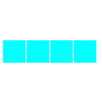
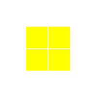
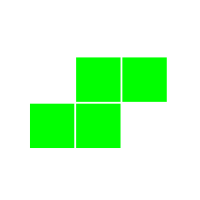
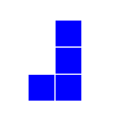
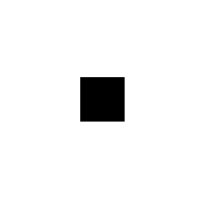
In order to start a new game, use your mouse and click the
START GAME button from the first page.
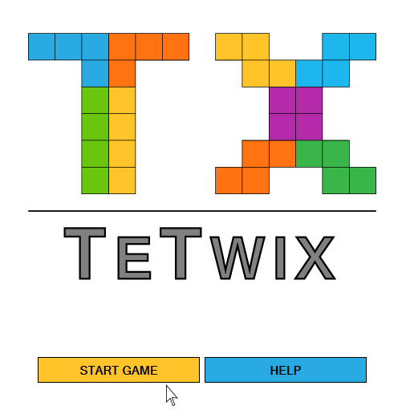
After starting the game you will be presented with the game area that is divided into two major
section: the Status Area and the Game Board Area.
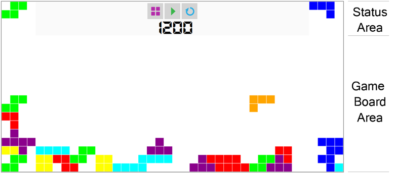
The Game Board Area is where all the action takes place. Player move and rotate the falling pieces
in order to place them accordingly to score as many point as possible
The Status Area is split into another couple of sections: The Piece Funnels, that are located
at the edges, 3 Control Buttons (Start Page, Pause/Resume, Restart) and Score label located in the
center of the area.
Pressing the (Start Page) button will close the current game and return the players to the start page.
Pressing the (Pause) will pause the game until the (Resume) button is pressed.
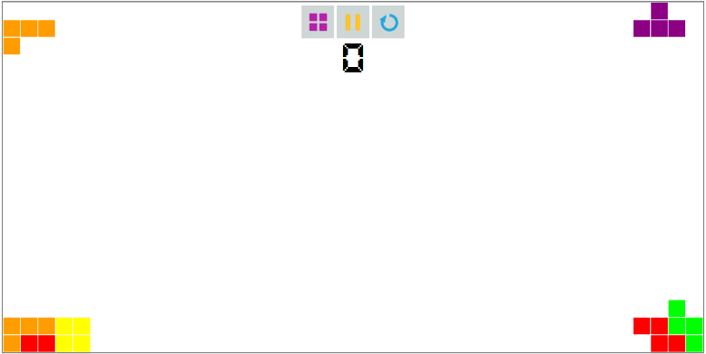
Pressing the (Restart) button will start a new game. Unless the game has ended restarting the game will erase the current progress.
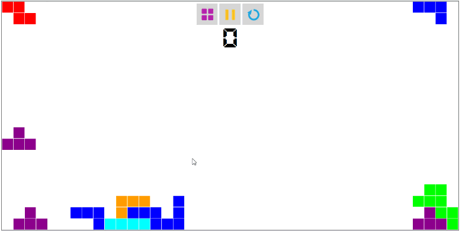
Players are rewarded 100 point for one cleared line. [...]
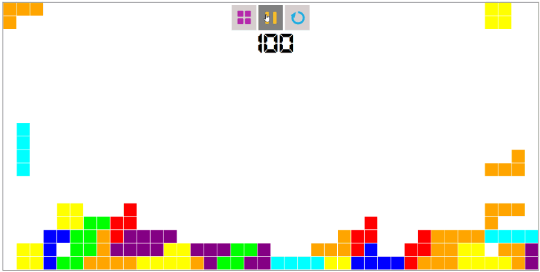
When one of the players reaches the top limit of the Game Board Area the current game is over and
the players have the possibility to share the score on Facebook.
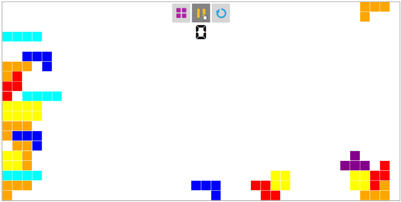
TeTwix is design to work with various inputs. In the following sections we will describe how you
can play the game using each device
Keyboard
Interaction with a keyboard is realised in a traditional way. Use (A), (D) and
(LeftArrow), (RightArrow) for moving the pieces left or right. Use (W) and (UpArrow) to rotate the piece
and (S) and (DownArrow) to drop the piece faster.
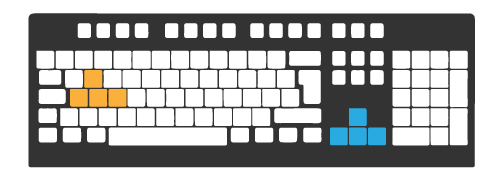
LEAP Motion
The LEAP Motion Controller is a innovative hand tracking device. Using simple and natural gestures
such as swipe left/right, push down or describe a circle you can manipulate the pieces on the
Game Board Area in new and exciting way.
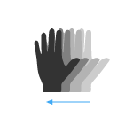
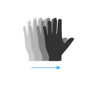
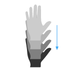
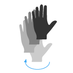
MaKey MaKey
This ingenious little device make everything you can think of a controller. We suggest a traditional
Controller and a Foot Pad, if you are trying to improve your footwork. Press on the corresponding symbols for
each of them to move the pieces.
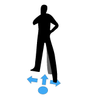
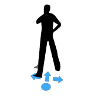
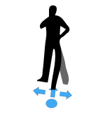
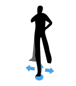
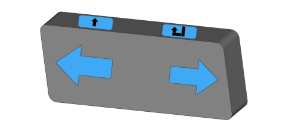
That's all you have to know about TeTwix. Have fun!